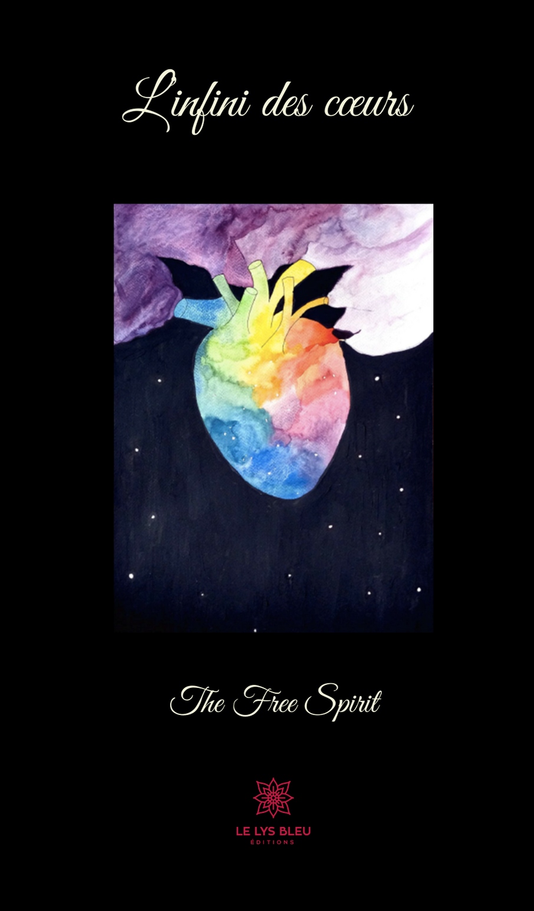

L'
Dans mon recueil, j'évoque divers injustices qui existent dans notre société et qu’il faut petit à petit combattre pour créer une meilleure qualité de vie pour toute personne n’importe ses caractéristiques ( sa couleur de peau, son orientation sexuelle, sa situation financière etc). Pour cela, il faut agir en tant que collectif ; je mets donc à votre disposition dans cet espace, divers liens pour défendre chacune de ces causes (des signatures de pétitions ou donations) .

Martin Luther King
☆ Pétitions ☆
- Pour le monde entier -
Change.org
Purewow
Google Sites
Ktswblog
Color of Change
Carrd.co
- Pour la France -
Mesopinions I
Mesopinions II
Change.org
Wesign.it
- Pour Maroc -
Avaaz
Change.org
☆ Donations ☆
- Pour le monde entier -
Black Lives Matter
Nymag
Carrd.co
- Pour la France -
SOS Racisme
LDH France
- Pour Maroc -
Ohchr
- Outils pour s’éduquer par rapport au sujet (et plus) -
It's Nice Chat
Dmarzdesigns
Il y a différentes manières de lutter contre la pauvreté au quotidien, et avec le temps on a développé des solutions à chaque fois plus créatives pour aider à lutter contre la pauvreté dans le monde entier ; voici alors, des applications qui vous permettent de contribuer facilement :
Grâce à Sharethemeal ,vous pouvez nourrir un enfant affamé par jour à seulement 0,70 Euros , et vous pouvez aussi suivre où les repas sont distribués et leur impact :
Sharethemeal
Grâce à Charitymiles, Pour chaque kilomètre que vous courez, marchez ou faites à vélo, un montant est versé à l’organisme de votre choix par les commanditaires actuels de l'application.
Le don peut sembler plutôt modeste - 10 cents/mile pour les personnes utilisant une bicyclette et 25 cents/mile pour les coureurs et les marcheurs - mais voir d'autres personnes participer et augmenter le montant vous fera vous sentir bien et vous encouragera à suivre votre programme de remise en forme :
Il s’agit d’une «application de dons gratuite», ce qui signifie que vous n’avez pas à envoyer d’argent réel à un organisme de bienfaisance. Au lieu de cela, l'application vous demande de donner une photo par jour, ce que vous pouvez faire occasionnellement ou aussi souvent que tous les jours. Chaque photo est assortie d'un don de 1 USD - vous pouvez donc faire un don de 365 USD par an :
Donateaphoto
Cette application est basée sur l'idée qui transforme votre temps en argent. Il calcule le temps que vous passez sur votre téléphone chaque jour et le convertit en dons de bienfaisance. Ainsi, 1500 points sont attribués 2 $, tandis que 3000 points rapportent 5 $, qui sont tous donnés à un organisme de bienfaisance de votre choix - vous en choisissez un parmi une liste d'organismes de bienfaisance participants
Cette application caritative arrondit vos transactions par carte de crédit et de débit et fait don de votre monnaie de rechange à l'association caritative choisie. Avec cette application, le changement que vous auriez oublié sera mis à profit. Coin Up vous permet de définir un objectif ou une limite mensuelle. Vous avez également le choix de faire un don unique ou un don mensuel fixe. Vous recevez également un reçu de don à la fin de chaque année :
Coinapp
Freerice est une autre application caritative de premier ordre du Programme alimentaire mondial. Il vous suffit de jouer à des jeux-questionnaires sur l'application, et les sponsors se chargeront des dons; ce qui signifie que vous ne paierez pas directement de vos poches . En d'autres termes, non seulement vous pourrez aider avec cette application, mais vous apprendrez aussi quelque chose!
-Pour le monde entier -
Change.org
Action Network
The Petitions Site
Carrd.co
- Pour la France -
Mesopinions
Change.org
- S’éduquer sur l’homosexualité au maroc -
Cairn.info